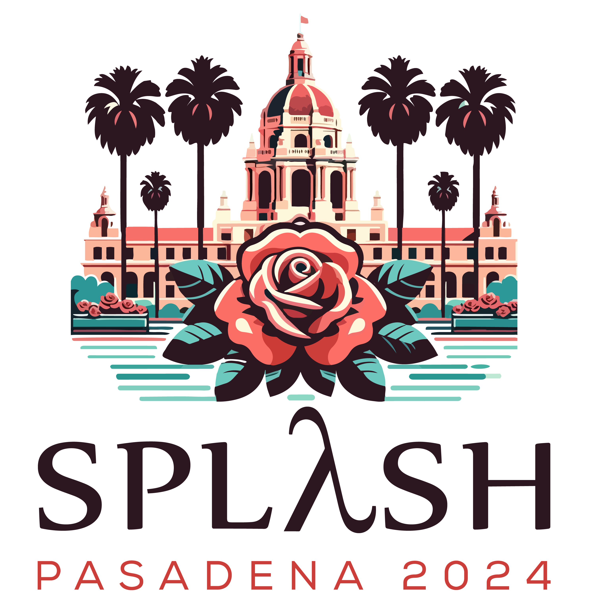
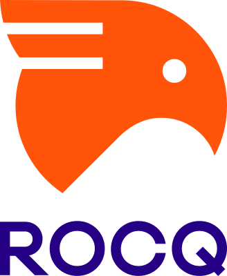

钟有为 Youwei Zhong
Name and pronunciation
My given name is Youwei (有为, pronunced as /yǒu/ and /wéi/ in Pinyin), and my family name is Zhong (钟, pronunced as /zhōng/ in Pinyin). In China, the family name is placed before the given name and there is no space between characters, so my full name is 钟有为 in Chinese.
For my given name, the most common mistakes made by English speakers are to pronounce it as "You-way" or "You-wee", but the correct pronunciation is closer to "Yo-way" (with a down-and-up tone on "Yo" and a rising tone on "way"). Another common mistake is to misspell my name as "Youwie".
For my family name, some English speakers make the mistake of spelling it wrongly as the common name "Zhang" (张), and pronounce it wrongly as "Jan". In Chinese, the "Zh" is pronounced like the "j" in "judge", and the "ong" is pronounced like "oo" in "boot" with an nose sound "ng" in the end, with an even tone. Be careful about the "ong" as it is not pronounced the same as "ong" in "song".
See Pinyin for details on how to read the Chinese Phonetic Alphabet, i.e. Pinyin.
Second-year PhD student in Computer Science at Yale University
Member of the Rigorous Software Engineering (ROSE) group led by Prof. Ruzica Piskac
Formal Methods, Zero-Knowledge Proof
I received my Bachelor's degree in Computer Science and graduated as a member of the first class of John Hopcroft Class (John Class) at Zhiyuan College, Shanghai Jiao Tong University in 2025. There, I was introduced to research in Formal Verification by Prof. Qinxiang Cao.
During my undergraduate, I was a visiting student at Yale University. I'm fortunate to work on Zero-Knowledge Circuit Optimization with Prof. Ruzica Piskac and Research Scientist Timos Antonopoulos at Yale, and Prof. Ning Luo at UIUC. Before that, I was fortunate to be advised by Prof. Yu Feng and Dr. Yanju Chen at UCSB in developing bug finders for Zero-Knowledge Circuits and Zero-Knowledge Virtual Machines.
You can reach me by youwei[DOT]zhong[AT]yale[DOT]edu or by youwei[AT]ywzh[DOT]org (9854 DF14 ED06 789C)
CV /
X (Twitter) /
Github
|
|
Publication
|

|
A Parameterized Framework for the Formal Verification of Zero-Knowledge Virtual Machines
Youwei Zhong
OOPSLA 2024
Poster PPT
🥈 The 2nd Place Winner in the Student Research Competition
This paper first proposed a parameterized framework for the formal verification of zkVMs in Coq. We prove the soundness and completeness of the constraint generation algorithm from machine instructions to semantics-level constraints. Existing works target specific zkVMs, and require repeated proof work in this phase, whereas our proofs are parameterized and can be reused in development and by all zkVMs. We also demonstrate the generality of our framework by instantiation on two examples: Cairo VM and a simplified zkEVM.
|
|
Manuscript
|
|
Certified but Private: Scalable Zero-Knowledge Proofs for Neural Network Guarantees
Youwei Zhong,
Ben Merbaum,
Timos Antonopoulos,
Ning Luo,
Charalampos Papamanthou,
Katerina Sotiraki,
Ruzica Piskac
We present PANDA 🐼, a scalable system that uses zero-knowledge proofs (ZKPs) to prove the robustness and fairness properties of a model without revealing its private parameters, supporting neural networks 4 orders of magnitude larger than previous approaches with significantly reduced prover overhead.
|
|

|
A Parameterized Verification Framework for the Constraint Generation Algorithms in Zero-Knowledge Virtual Machines
Youwei Zhong,
Zihan Xu,
Yuncong Hu,
Xiang Xie,
Yu Yu,
Qinxiang Cao
This paper is an extension work based on my OOPSLA'24 SRC paper.
We formalize the cryptographic security properties of zkVMs in the Rcoq (Coq) proof assistant, including soundness, completeness, knowledge soundness, and zero-knowledge, by formalizing probabilistic programs using monads.
|
|
Awards and Honors
🏆 Wu Tsai Institute Graduate Fellowship (full stipend, tuition and healthcare support for three years, Yale University), 2026
🥈 The 2nd Place Winner in OOPSLA 2024 SRC (300 USD)
🏆 Longfor Scholarship (10’000 yuan, 10 winners each year, Zhiyuan College), 2022
🏆 Zhiyuan Honorary Scholarship (5’000 yuan per year, Top 5%, Shanghai Jiao Tong University), 2021, 2022, 2023, 2024
🏆 Three Good Student of Shanghai Jiao Tong University (one person per class per year), 2022, 2023, 2024
🥇 A-class Academic Excellence Scholarship, Shanghai Jiao Tong University, 2024
|
|
{kind=link}